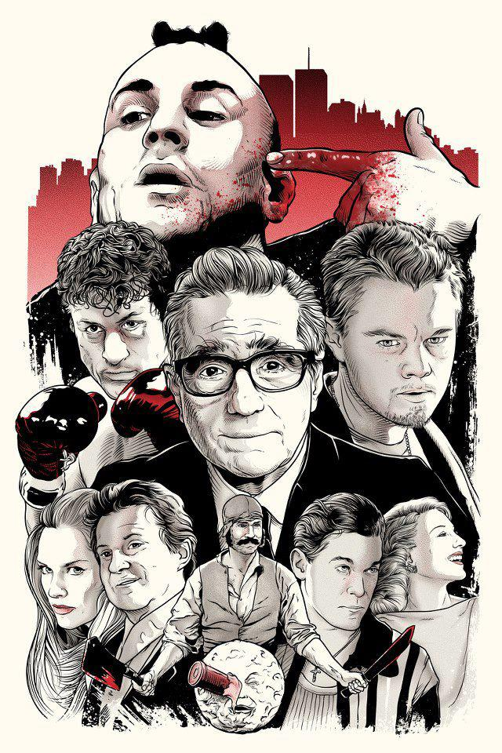

FCC TRIBUTE PAGE
Martin Scorsese
The Man Who Redefined Western Cinema!!!!
Martin Scorsese discussing script with leonardo di caprio during the shooting process of 'WOLF OF THE WALL STREET'
What Makes Martin Scorsese the Best Director of all Time
The world of cinema is not something conventional. The projected stories are the vision of certain people who can speak from the dreamiest to the most real, and there is no gender preference as the story immerses the viewer to a journey that engages him throughout the film. When we talk about Martin Scorsese we name one of the great directors of Hollywood. Scorsese’s films date back to the 1960s, and to date have more than 20 films and 12 documentaries, so it is interesting to review the work of one of the most influential directors in Western Cinema.
What makes him Special?
Scorsese always relied on people he can not only trust, but also have likes similar to his own on a personal level, and concerns about carrying out projects that show something new, unique to the viewer. Scorsese builds his entire discourse, the whole adventure, around key pieces of cinema. He is a talented director, and especially of actors. Getting the best of DiCaprio, or De Niro only after a few films, is worthy of a veteran director, who connects with the story, what he needs to have and with the actor selected to do it. Scorsese, a director of considerable age, had chosen, as he himself said, to abandon large-scale blockbusters, and to dedicate himself to a smaller but more personal budget. He is well known for his risky approach on different genres and that is almost a stigma when it comes to other cotemporary directors in Hollywood. He is able to get into various genres and it has really moved the audience the way he did it.
Achievements:
Martin Scorsese is the winner of an Oscar, two Golden Globes, and two BAFTA awards, as well as another one from the Directors Guild of America, he is also one of the founders of the World Cinema Foundation and has been decorated with the French Legion of Honor in 1987. Scorsese is President of The Film Foundation, a non-profit foundation dedicated to the preservation of deteriorating film material.
HALL OF FAME LIST :
The Wolf of Wall Street (2013)
The Departed (2006)
Mean Streets (1973)
Taxi Driver (1976)
Raging Bull (1980)
Goodfellas (1990)
Gangs of New York (2002)
Conclusion:
Martin Scorsese is one of the best directors, screenwriters, and producers in the history of cinema. When Martin releases a tape, one always expects the best, why it is obvious, this guy has left us at least twenty films of forced viewing and more than five masterpieces. He knows how to bring the story to the forefront. His creative work include risky and experimental titles, but also super classic and solid productions. He is a true artist who knows how to communicate his own vision of the world, and he does it in such a way that, although his films are long lasting, the public loses the notion of time and ends up desiring that the story continues.